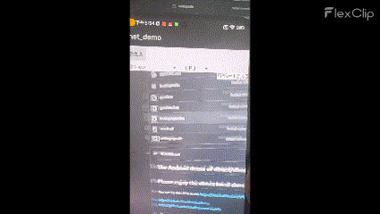

项目用途
这是一个 Android 演示工程：用 Tencent ncnn 跑 DBNet / DBNet++ 文字检测，预览画在相机画面上。README 同时列出 opencv-mobile，以及 PaddleOCR、ncnn-Android-mediapipe_hand 作为参考。
包名是 com.ncnn.dbnet，界面标题来自 app/src/main/res/values/strings.xml 的 dbnet_demo。当前相机路径做的是检测与画框：JNI 每帧调用 Det::detect，源码里的 TextBox.text 以及 getRotateCropImage / getPartImages 没有接到这条实时路径上。仓库 assets 里也只有 *det* 模型，没有识别网络。
可见流水线
下面按当前源码串起来，不是产品说明书。
-
Camera2 NDK 取流
Manifest 声明
CAMERA权限和android.hardware.camera2.full。Activity 竖屏，打开前后摄，把SurfaceView交给 native。 AndroidManifest.xml · MainActivity.java · ndkcamera.cpp -
选模型，选 CPU / GPU
界面有「切换摄像头」、模型下拉框和 CPU / GPU 下拉框。GPU 在 ncnn 打开 Vulkan 时对应
use_vulkan_compute；若get_gpu_count() == 0，检测器会被清掉，预览画unsupported。 main.xml · strings.xml · DBnetJNI.cpp -
从 assets 加载 ncnn 模型
loadModel读{modeltype}.param与{modeltype}.bin。CMake 链接 ncnn、opencv-mobile 的 core/imgproc，以及camera2ndk、mediandk。 DBnetJNI.cpp · CMakeLists.txt -
DB 式检测与画框
Det::detect把长边缩到 640，再 pad 到 32 的倍数，按源码里的 ImageNet mean/norm 归一化，输入input0、输出out1。概率图按阈值二值化、膨胀、找轮廓，再用 Clipper 做 unclip，最后在帧上画轮廓和多边形。阈值在 JNI 里写成0.4 / 0.3 / 2.0。 Det.cpp · common.cpp · clipper.cpp · DBnetJNI.cpp -
叠加 FPS 后送窗
draw_fps用滑动平均在画面上写FPS=...。这是预览装饰，仓库没有把它整理成测试表。 DBnetJNI.cpp
构建与运行
README 的步骤如下。本页没有替你跑过 Android 构建。
- 从 ncnn Releases 下载
ncnn-YYYYMMDD-android-vulkan.zip，或自行编译 Android 版 ncnn。解压到app/src/main/jni，并改app/src/main/jni/CMakeLists.txt里的ncnn_DIR。 - 从 opencv-mobile 下载
opencv-mobile-XYZ-android.zip，解压到同一jni目录，并改OpenCV_DIR。 - 用 Android Studio 打开工程，构建后在真机或模拟器上运行。
仓库构建文件里还能直接读到的内容
- 当前 CMake 已指向
ncnn-20230223-android-vulkan/${ANDROID_ABI}和opencv-mobile-4.6.0-android/sdk/native/jni。 app/build.gradle：minSdkVersion 24，compileSdkVersion 24，CMake 3.10.2，applicationIdcom.ncnn.dbnet。- 根目录
build.gradle使用 Android Gradle Plugin 3.5.0。 - CMake 写的是
det.cpp，仓库里的文件名是Det.cpp。在大小写敏感的文件系统上需要留意。
README、界面和 assets 对得上的模型
| 名称 | README | 界面 / JNI | assets |
|---|---|---|---|
det-sim-op |
列出 | 列出 | 有 .param / .bin |
pdocrv2.0_det-op |
列出 | 列出 | 有 .param / .bin |
ch_PP-OCRv3_det |
列出，并标 (bug) |
列出 | 有 .param / .bin |
dbnet++ |
列出，并标 (bug) |
未列入下拉框 | 未见对应文件 |
v3det |
未写 | 列出 | 有 .param / .bin |
new_det_infer-sim |
未写 | 列出 | 未见对应文件 |
Det.h 注释写：一般 dstHeight = 32，「when use PP-OCRv3 it should be 48」。当前 detect() 没有用这个量。
看得见的结果
仓库提供的演示影像只有根目录 result.gif。下面静止帧从同一文件截出，完整动画约 3.2MB，默认不自动下载。

result.gif 放到 docs/assets/。
局限（只写仓库里能核对的）
- 这个 GitHub Pages 站点不能加载 ncnn，也不能打开手机摄像头。要看实时效果，只能按 README 在 Android 上构建。
- README 把
ch_PP-OCRv3_det和dbnet++标成(bug)，但没有写出具体现象。 - 实时路径是检测 + 画框。没有识别模型文件，也没有在预览上画出识别字符串。
new_det_infer-sim出现在界面数组里，assets 里没有对应文件。dbnet++出现在 README，没有对应界面项和资产。Det::load接收target_size/ mean / norm，detect()里写死长边 640 和 ImageNet 归一化。- 没有 LICENSE 文件。JNI 源文件头写的是 Tencent ncnn 的 BSD 3-Clause；
clipper.cpp头写的是 Boost Software License 1.0。 - README 和源码都没有准确率、延迟表、测试机型或部署案例。本页也不补充这些数字。